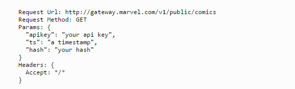
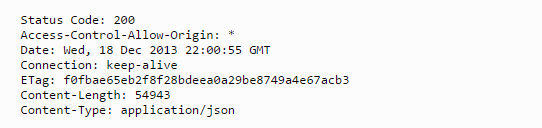
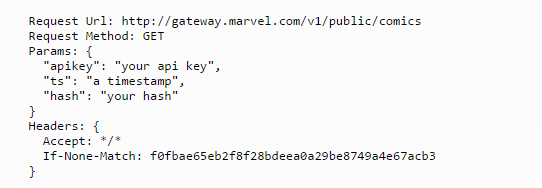
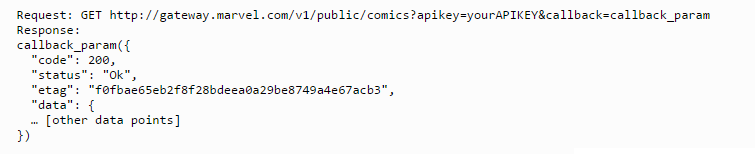
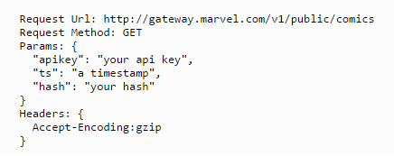
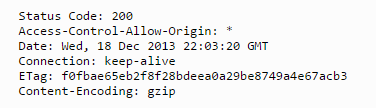

The Marvel Comics API is a RESTful service which provides methods for accessing specific resources at canonical URLs and for searching and filtering sets of resources by various criteria. All representations are encoded as JSON objects.
The Marvel Comics API’s base endpoint is http(s)://gateway.marvel.com/.
You can access six resource types using the API:
All requests to the APIs must be authenticated using the methods outlined in the request signing and authentication guidelines. Requests which fail authentication generally pass a 401 HTTP code and an error describing the reason for rejection.
All API endpoints are documented as machine-readable representations using the swagger-doc specification. These representations are available at http://gateway.marvel.com/docs.
All endpoints currently accept only HTTP GET requests.
Most successful results will contain an “etag” attribute and ETag HTTP header with a digest of the returned content. In order to save bandwidth and make your application more performant, you may optionally pass an “if-none-match” HTTP header with that digest for subsequent requests to the same URL. If the content has not changed since the last request, the response code will return with an empty body and a 304/Not Modified HTTP header and you can use a previously-stored value for the content.
Note: Most browsers will do this automatically, but you may need to manually add this logic to server-side applications.
Initial request:
Initial response:
Subsequent request:
Subsequent response:
Responses returned by the Marvel Comics API are compliant with the W3C CORS specification, which allows any properly-authorized requests to be made from any origin domain. This means that you should not need to wrap calls in JSONP callbacks in order to make calls from browser-based applications. If you do prefer to use JSONP, however, all endpoints will accept a callback parameter to all endpoints that will wrap results in a JSONP wrapper.
Without a callback:
With a callback:
In order to save bandwidth and make your application more performant, the Marvel Comics API can compress responses with GZIP. You may request a GZIP-ed response by passing an Accept-Encoding header to any endpoint.
Request:
Response:
